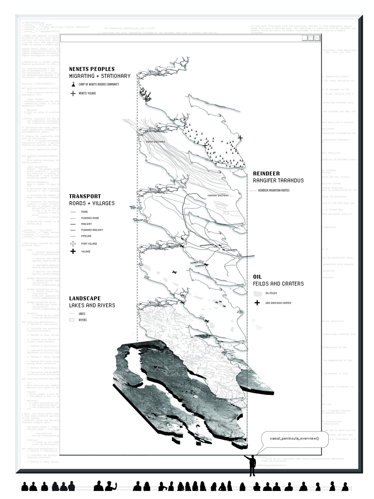
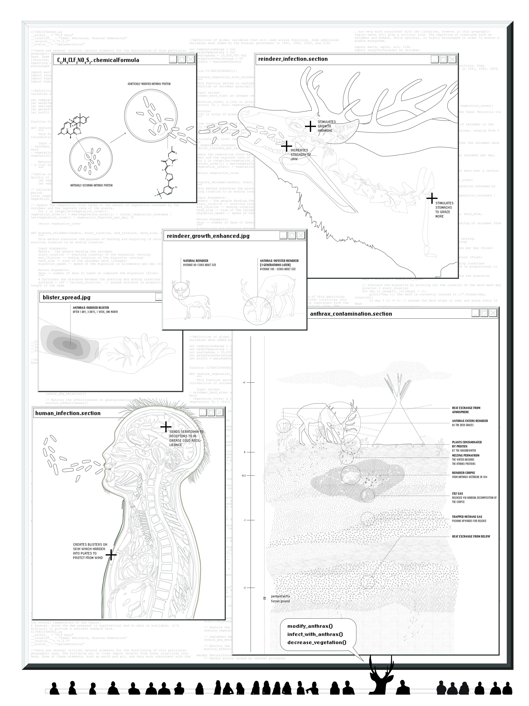

2023
THE YAMAL CONSPIRACY
a geo-engineered fabulation
Behind closed doors, the Arctic Consortium took on the challenge of geo-engineering the Yamal Peninsula. This document contains evidence of their interventions within the Yamal Peninsula specifically as this anonymous group of individuals got to work, as a speculation on the possibilities of geo-engineering of the shifting environment.
CONTEXT
4.s22 Geo-Design Seminar
MIT SA+P
LOCATION
Yamal Peninsula, Russian Federation
SOFTWARE
Illustrator, Photoshop
SUPERVISORS
Rania Ghosn
DISSEMINTION
Presented at ACADIA 2023
"No one really knows how the game is played,
The art of the trade,
How the sausage gets made,
We just assume that it happens,
But no one else is in the room where it happens."
-Aaron Burr, Hamilton
Read the full feild note on CumInCad .

In the Neret language 'Yamal' denotes "the land's end", which is precisely what the peninsula is – an arctic lowland in North Western Russia, sparsely population with burgeoning infrastructure. Yet this discrete land is at once at the center of a multi-front war, one that is raging simultaneously between the Neretz people and the Russian Federation, the land and the sea, liquid and gas, ice, and oil. In recent decades however, activities in the peninsula have begun to run very smoothly, with unnatural changes slowly taking place. The alterations have been deemed by the public to be suspiciously convenient. Yet, why would anyone question the design and will of Mother Nature when she behaves beneficially to all parties?
Behind closed doors, in pursuit of the optimization of the northern resources, the Arctic Consortium took on the challenge of hacking the pre-written codes to the operations of the planet to geo-engineer alternative processes for the function of the Yamal Peninsula. Originating from the Arctic Council, they have been able to successfully remove public opinion from their council chambers, they freely make decisions and take action they feel are economically and climatically beneficial for the Arctic region, including large-scale geoengineering and modification of the landscapes. This document document contains evidence of their interventions within the Yamal Peninsula specifically as this anonymous group of individuals got to work.

.jpg)
.jpg)